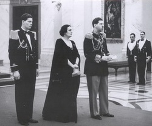
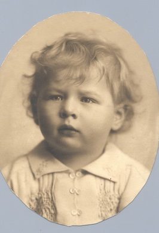

© Muzeul Național Peleș


 printați
printați
+40244 310 918 |
peles.ro@gmail.com |
Regele Mihai
Născut la 25 octombrie 1921, în Castelul Foişor de la Sinaia şi botezat în rit ortodox după numele voievodului Mihai Viteazul, Mihai I descoperă foarte devreme valoarea cuvintelor datorie, credinţă şi patrie, valori care înnobilaseră domnia bunicului său, Ferdinand cel Loial (1914 – 1927).
La numai şase ani, copilul precoce, care vorbea româna şi engleza, studia pianul şi şahul, călărea un ponei, fotografia şi conducea o maşinuţă, sub atenta supraveghere a mamei sale, Principesa – mamă Elena, este aruncat în vâltoarea istoriei. După a treia renunţare la tron a tatălui său, Principele Carol, îi revine sarcina ingrată de a cârmui o ţară aflată în derivă (1927 – 1930).
Detronat după revenirea din exil a Regelui Carol al II-lea, la 8 iunie 1930, primeşte titlul simbolic de Mare Voievod de Alba – Iulia, urmează cursurile unei şcoli particulare stricte cu sediul la Palatul Regal şi începe instrucţia militară. La numai şaisprezece ani, este ridicat la gradul de sublocotenent al Batalionului I de Vânători de munte şi depune jurământul de credinţă faţă de Rege. Totodată, Mihai I a fost cel mai tânăr mareşal al Armatei române.
|  | Ţinut departe de tumultul vieţii politice, dominate de figura autoritară a Regelui, Mihai asistă neputincios la evenimentele zbuciumate din România interbelică, marcate de ascensiunea mişcărilor extremiste, culminând cu asasinate politice, schimbarea Constituţiei, interzicerea tuturor partidelor şi dictatura carlistă. |
Pactul Ribentropp – Molotov, din 23 august 1939 şi Dictatul de la Viena, din 30 august 1940, cu consecinţe dezastruoase asupra României, grăbesc sfârşitul domniei controversate a lui Carol al II-lea. Obligat să părăsească ţara la 6 septembrie 1940, Carol lasă în mâinile fiului său, Mihai I, destinele unei Românii ciuntite de provinciile istorice, Transilvania, Bucovina şi Basarabia. Pus în faţa faptului împlinit, la aproape nouasprezece ani, Mihai depune pentru a doua oară jurământul de credinţă faţă de naţiune şi Parlament, asumându-şi un rol istoric pe care a ştiut, fără îndoială, să-l joace cu demnitate şi curaj.
Marcată de duplicitatea Occidentului, soarta României părea pecetluită: prin voinţa mareşalului Antonescu, autointitulat ,,Conducătorul”, România intră în război de partea Axei contra voinţei Regelui pe tron. Antonescu proclamă Statul legionar (14 septembrie 1940 – ianuarie 1941), declară război Uniunii Sovietice, la 22 iunie 1941 şi acţionează peste autoritatea de drept a Regelui. Conştient de consecinţele dezastruoase ale politicii lui Antonescu, Regele Mihai decide să schimbe cursul istoriei.
Actul curajos de la 23 august 1944, prin care România se alătură aliaţilor tradiţionali, determinând scurtarea războiului cu şase luni şi cruţarea a zeci de mii de vieţi omeneşti, a fost opera tânărului Mihai I. La orele 22.00, Radio România transmitea mesajul Regelui, prin care armata română întorcea armele împotriva Germaniei naziste, iar Constituţia din 1923 era repusă în drepturi. Pentru serviciile aduse umanităţii prin gestul istoric de la 23 august, Regele Mihai a fost onorat de preşedintele Statelor Unite cu ,,Legiunea de merit” şi de către U.R.S.S., cu ,,Ordinul Victoria”.
Constrâns să recunoască în cele din urmă un guvern comunist, condus de Petru Groza (6 martie 1945 – 30 noiembrie 1946), Regele face demersuri disperate în vederea limitării pericolului roşu în România. Acţiunile sale diplomatice sunt sortite însă eşecului. După ,,greva regală” din august 1945 – decembrie 1946, Regele Mihai I este obligat – în absenţa unui suport extern – să recunoască alegerile măsluite din noiembrie 1946. La 30 decembrie 1947, Mihai I este forţat să semneze actul de abdicare. Cu ultimul Rege, se încheia un capitol de realizări remarcabile pe plan cultural, economic şi social, măturate cu brutalitate de tăvălugul comunist. |
 |